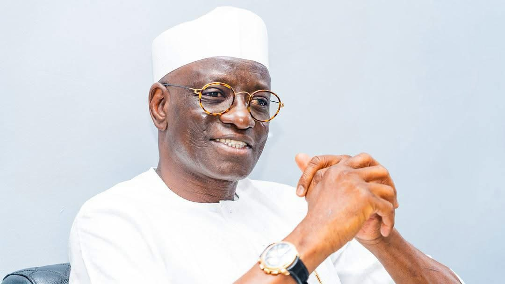
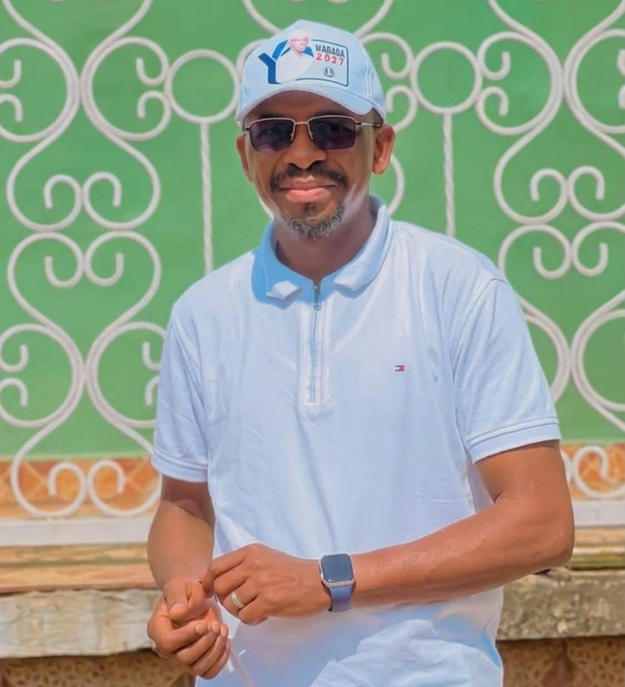

WHY
WADADA.
A people-centred vision for human development, economic opportunity, infrastructure, responsible resource development and lasting security across Nasarawa State.

Experience that
shapes the work.
Sen. Ahmed Aliyu Wadada is a business administrator, bridge builder and legislator whose career spans private enterprise, the House of Representatives and the Senate.
Professional experience across business, distribution and corporate leadership.
Entered elective politics in 2003 and served in the Federal House of Representatives before the Senate.
Current Senate service includes leadership of the Senate Public Accounts Committee.
Six pillars.
One state, rebuilt.
Every letter of HEARTS is a real problem Nasarawa faces today, paired with what Wadada will do about it between 2027 and 2031.
Open full agenda ↗Human Capital Development
Nasarawa has one of the highest out-of-school child rates in North-Central Nigeria, with education, health and youth services hardest to reach in Awe, Keana and Toto. Maternal mortality remains high, and youth unemployment is rising.
Education reform, expanded maternal and child healthcare, digital innovation hubs for young people, and youth leadership programmes in every LGA.
Energy & Mineral Resources
Nasarawa holds rich deposits of barite, tin and lead, yet mining is poorly coordinated and rural electrification sits below 30%.
Solar mini-grids to widen access to power, responsible mining investment, green-industry training, and stronger environmental protections.
Agriculture & Green Economy
Agriculture employs over 70% of the state's population, yet remains rain-dependent and poorly mechanised — post-harvest losses exceed 35%, and young people are leaving farming.
Subsidised inputs, expanded irrigation, agro-processing hubs in Lafia, Akwanga and Keffi, and climate-smart farming practices.
Rural & Urban Development
Fast-growing towns like Lafia, Akwanga, Karu and Keffi are expanding without coordinated planning, while rural communities still lack clean water, roads and sanitation.
Rehabilitated feeder roads, stronger urban planning, affordable housing, and smarter waste and public services.
Trade, Investment & Industry
High informality and limited access to finance continue to hold back local entrepreneurship, despite the state's strategic location and recent gains in ease of doing business.
Investment promotion desks in every LGA, expanded industrial parks, and digital and financial tools to power small businesses.
Security
Rural banditry, farmer-herder conflict and intercommunal clashes — concentrated in Toto, Doma and Awe — continue to displace communities and disrupt farming.
Community surveillance networks, youth reorientation programmes, technology like drones and GIS, and peacebuilding through traditional institutions.
Put your
WHY WADADA
on display.
Create a personalized supporter poster, add your photo and share the movement with your friends, family and community.
Open Poster Generator ↗Meet the brain behind the movement
Muhammad Abubakar
Special Adviser to the Governor's office
A grassroots platform built around the HEARTS Agenda and a shared vision for the future of Nasarawa State.
Explore the HEARTS Agenda ↗
CONVENERStories from
the movement.
Campaign photos, videos and moments from across Nasarawa State.